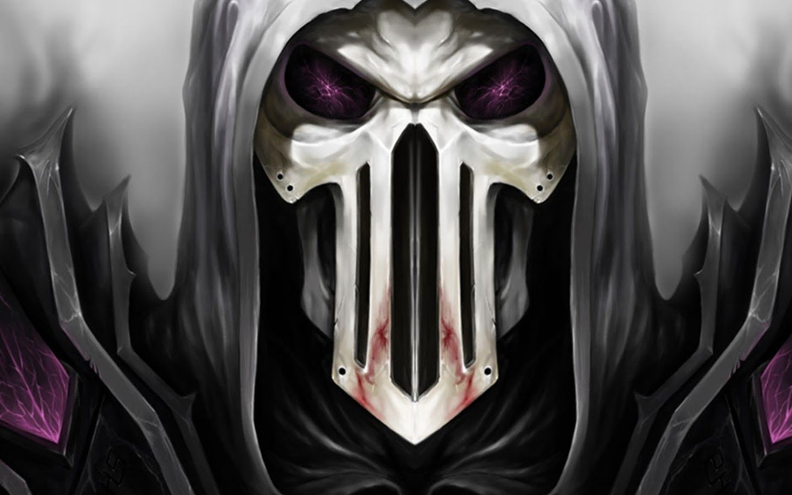
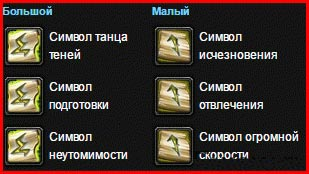
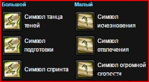
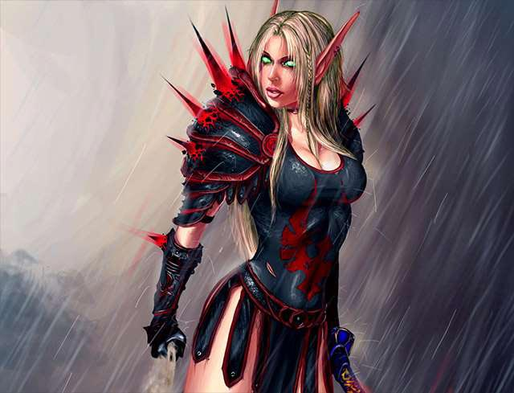

Гайд по классам Wow 3.3.5
На данной странице собрана основная полезная информация по различным классам игры World of Warcraft 3.3.5
Разбойник
Рассмотрим пвп гайд на шд рогу 3.3.5 или как некоторые зовут его саб разбойник.
Саб рога достаточно требовательный к скилу класс, поэтому готовьтесь к долгому и нудному изучению механики игры.
К плюсам данного класса можно отнести :
- Огромный бурст с помощью танца теней;
- Мобильность и выживаемость;
- Контроль ситуации;
К минусам можно отнести :
- Слабый тоннелинг (по сравнению с мути рогой) , если Шд на кд;
- Зависит от Кд способностей;
- Ошибки могут привести к поражению;
Выбор расы :
За альянс мы берем хуманов(людей) за их расовую способность триньки и мастерство к мечам и молотам;
Также можно присмотреться к Ночным эльфам, со своей интересной способностью «Слиться с тенью», с помощью него вы сможете уйти в стелс, не потратив ваниша.
Также лучше палятся невидимые цели; Можно присмотреться и к дворфам, хотя их в основном пикали на классике, но после нерфа «Каменной формы», которая снимает яды, кровотечения и болезни, а также повышает 10% брони, он стал не так популярен. Раньше можно было снимать блайнд даже во время нахождения в нем, так как он считался ядом (в ваниле).
Можно посмотреть гномов, но это чисто из-за фана. Под уменьшающимися зельями, можно смело троллить своих неопытных противников, у которых трудно будет взять вас в таргет. Плюс ко всему абилка, которая снимает с вас все замедления.
За орду первым по приоритету будет андед, у него есть крутейшая анимация, расовая способность «Воля отрекшихся» (которая снимает страх и сон, жаль что в лк сделали общее кд с пвп тринькой – 40 сек).
Следом будет идти блад эльфы со своей абилкой, которая даёт краткосрочный сайленс, 2 сала у разбойника, достаточно профитно!
Орки со своей бурстовой абилкой, которая повышает силу атаки. А также сниженный % стана по вам
Пвп билд для Шд роги 3.3.5
Для саб роги можно выделить один билд, вот например самый распространенный билд, где синими кружками я пометил ситуативные таланты, которые можно изменить:

Вот два вида расстановки символов, но я больше склоняюсь к первому варианту с неутомимостью:
 Капы и характеристики :
Меткость (хит рейтинг) – для саба нам нужно обязательно добрать 5%. Если вы наберете меньше, то будете неизбежно мисовать по своей цели.
Сила атаки (ап) – одна из самых основных характеристик для разбойника, для ШД минимальная планка составляет 5500 апа.
Рейтинг пробивания брони (рпб) – также является важной характеристикой, для роги будет нужно набрать хотя-бы 40% рпб, а остальное кидать в силу атаки, так как это будет самым профитным вариантом.
Крит и хаст – сами мы его не добираем, он дается нам бонусом с наших вещей.
Устойчивость (ресайленс) – всё будет зависеть от стиля вашей игры, некоторые бегают с 500 реса, другие 700-800, а кто-то берет 900-1100. Тут вы должны найти оптимальный вариант для вашей игры.
Сокеты :
Из сокетов мы забиваемся на +40 к силе атаки (Яркий багровый рубин) или +20 к рейтингу пробивания брони
Растрескавшийся багровый рубин, если есть нехватка капа. Не забываем про особый камень, который
дает +10 ко всем характеристикам, для активации мета-сокета.
В мета-слот мы вставляем Алмаз жестокого землеправителя, который прибавляет +21 к ловкости и +3% к критическому урону.
Чарки :
На голову чарим: Магический знак триумфа, если добираем рес Магический знак страданий
Плечи делаем: Начертание триумфа либо Великое начертание секиры
На плащ мы берем: Свиток чар для плаща — ловкость V
На браслеты: Свиток чар для наручей — штурм II
Для перчаток: Свиток чар для перчаток — крушитель
Для пояса: Извечная поясная пряжка
На ноги ставим: Накладки для поножей из ледяной чешуи
Для ботинок: Свиток чар для обуви — штурм II
На МХ (главное оружие) мы ставим: Свиток чар для оружия — берсерк
На ОХ вешаем: Титановая цепь для оружия
Профессии :
Самые профитные профессии это кузнечка и ювелирка, так как это 2 дополнительных сокета и 3 усиленных камня. Либо меняем на инжу и делаем ракету.
Воин :

Рассмотрим пвп гайд на армс вара 3.3.5, сюда будут входить билд, глифы, капы и различные сетапы.
Игра за воина будет не из лёгких, так как от такого количество биндов у вас точно закружиться голова, если вы сели играть за него впервые.
Выбор расы :
За альянс мы берем хуманов(людей) за их расовую способность триньки и мастерство к мечам и молотам;
За орду можно взять орка (-% от стана), бурстовая абилка, которая прибавляет ап и мастерство к топорам.
Ещё вариант чуть хуже – это таурены, +5% к стамине и масс стан для сейва себя или напарника
Пвп билд на Армс Вара 3.3.5
Самый распространенный билд

Символы :
Большие символы:
Символ размашистого удара
Символ смертельного удара
Символ превосходства
Малые символы:
Символ боевого крика
Символ рывка
Символ кровавой ярости
Капы и характеристики :

Вот основные капы и характеристики для армс воина:
Меткость(хит) – 165 единиц(5%) не меньше, так как вы будете промахиваться по противнику на арене или бг, а это ни есть хорошо;
Крит – для воина 40% будет являться минимум;
РПБ (пробивание брони) – для авара оптимальным вариантом будет являться 65-70%;
Ресайленс – 1к для воина будет оптимальным;
Ап (сила атаки) – 6100 или 6200 (с бафом крика).
Камни :
Если у вас нет хорошего ПВЕ гира, то закидываем камни на +20 к силе во все гнезда, кроме одного,один камень +10 ко всем характеристикам нужен для активации мета-сокета.
Если же с пве обвесом у вас всё нормально, то желтые слоты забиваем на +20 к ресайленсу, красные +10 к силе и +10 к ресайленсу и по стандарту один на +10 ко всем характеристикам.
Мета-сокет мы ставим на +21 к ловкости и +3% к критическому урону, почему мы ставим агилу, а не крит? Потому что разница в прибавке крита минимально, но с агилой мы получим небольшой % к уклонению, а это будет профитней
Чарки :
Руки – ставим чарку на 44 к силе атаки;
Голова — 50 к силе атаки, 20 к ресу;
Плечи – 40 к силе атаки, 15 к ресу;
Плащ — 22 к ловкости;
Грудь — 20 к ресайленсу (или же +10 ко всем характеристикам, если нет нормального пве обвеса);
Запястья — 50 к силе атаки;
Пояс – пряжку на дополнительный сокет;
Ноги — 40 к ресайленсу и 28 к стаме, либо 75 к силе атаке и 20 криту;
Ступни – 15 к стамине и увеличение скорости бега, а то вы так никого не догоните ;
Щит — 12 к ресайленсу;
Одноручка – «Вытягивание крови»
Двуручка – тут мы ставим «Берсерк» (боевое исступление) или 110 к апу.
Профессии :

Самые профитные профессии это кузнечка и ювелирка, так как это 2 дополнительных сокета и 3 усиленных камня.